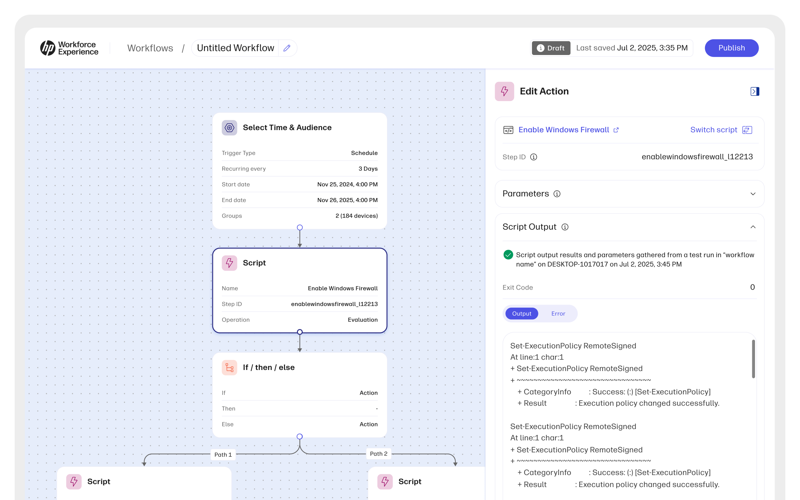
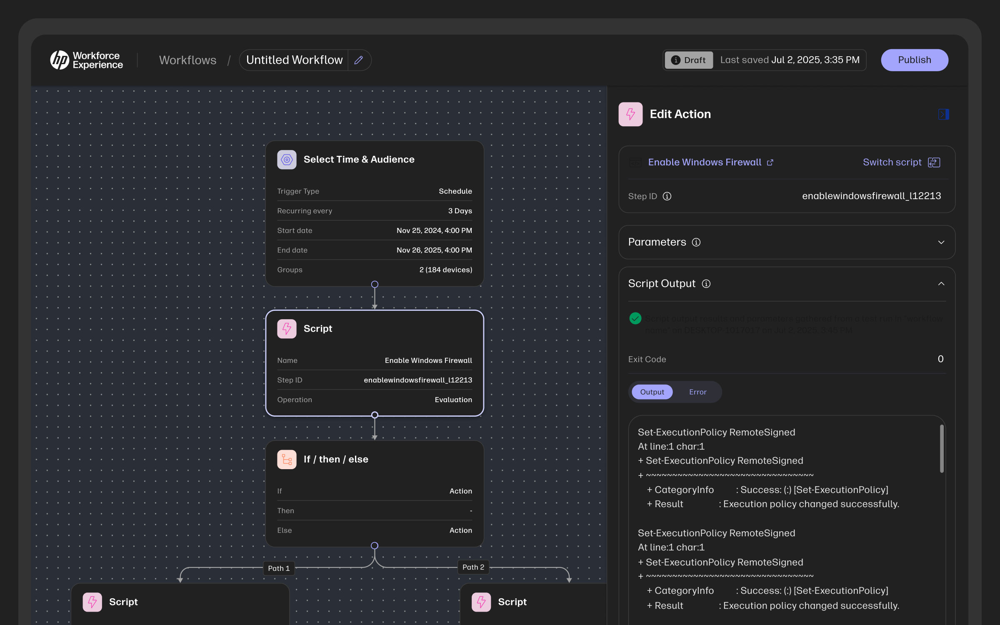

Beyond automation: designing workflow orchestration
A design perspective on building enterprise automation that stays understandable as workflows, conditions, failures, and scale become complex.
Most writing about workflow orchestration explains what a trigger is. That was never the hard part. I spent seven months designing a visual automation builder for enterprise IT operations, and the lesson that outlasted every screen I drew is this: a workflow gets written once and read for years. I designed for the reader.
01The short answer
Orchestration is the coordination of separate automated steps into one procedure that runs on its own. That is the textbook half of the definition, and it is the half that matters least.
The design half is that orchestration is a claim about consequences. What runs, in what order, on whose machines, under which conditions, and what should happen when step four fails on part of the fleet and succeeds on the rest.
Chaining two actions together is easy. The design problem begins the moment reality disagrees with the chain.
02Orchestration is not automation
Automation removes a manual action. Orchestration removes the person who was keeping the sequence in their head.
A script that clears a full disk is automation. Finding every device close to capacity, skipping the ones mid-update, clearing the rest, retrying the failures once, then reporting what actually happened is orchestration. Same script, different problem. The second one has order, state, and consequences.
This is why telling a stretched IT team to add more automation rarely helps. They usually have plenty of scripts. What they lack is somewhere the sequence lives that stays legible to someone other than the person who wrote it.
A workflow gets written once and read for years. I designed for the reader.
The principle the builder was designed against
03What a workflow is made of
Strip the vocabulary away and there are six moving parts. Every builder I studied has some version of them, even when the names differ.
- TriggerWhen it starts. A schedule, an event, an alert threshold, or a person pressing run.
- ActionsThe work itself. Install, restart, run a script, notify someone, raise a ticket.
- ConditionsThe branches. If the device is on battery, wait. If the install fails, stop before the reboot.
- ScopeWho it happens to. A device group, a saved query, one machine belonging to one frustrated person.
- IntegrationsThe systems it reaches into for identity, tickets, inventory, or messaging.
- Run historyWhat happened, per device, per step, on the day it ran.
Six parts, and not one of them is where the difficulty lives.
04Where the complexity sits
Not in the steps. Steps are easy to draw. The complexity is in the relationships between them, and relationships have no natural picture.
Branches multiply. Two conditions give four paths, and nobody holds eight in their head while also remembering which group the workflow points at. Scope resolves at run time, so the machine list you get on Friday is not the one you previewed on Monday. Permissions cut across all of it: the person who builds a workflow often cannot run it, and the person who can run it did not build it.
Then there is reach. A workflow that touches tens of thousands of devices is not a form submission, it is a decision with a blast radius. The builder has to show that radius before the run rather than during the postmortem.
Every one of those problems is an information architecture problem wearing a canvas costume. Which is why the first serious decision was not visual.


05Designing the canvas
A form is the cheap starting point, and it holds up until the first condition. After that a linear list of steps reads beautifully and quietly lies to you about what the workflow does.
So the graph became the record, read top to bottom, one node per step. Three rules kept it readable as workflows grew longer.
One node, one thing
The moment a node does two things, its label stops describing it and people open it to find out what it is. Splitting the work costs vertical space and buys back comprehension. That trade is almost always worth taking.
Draw the path, do not imply it
If a run took the failure branch, that branch is the one highlighted in its history. Reading a past run should feel like reading the workflow, not translating it.
Nothing critical lives only in a panel
Scope, trigger, and reach sit on the canvas surface. If you have to open three panels to learn what a workflow touches, you will press run without opening them.
The canvas is not a diagram of the workflow. It is the workflow.
Why the graph, not the form, became the record
06Configuration, without the wall of fields
Every action has settings, and some have dozens. Showing all of them is honest and useless, so configuration moved into a panel that opens with the handful of fields most runs need and keeps the rest one click behind them.
Naming was harder than layout. Field names came from the API, where they are precise and unreadable. Operators had their own words for the same things, shorter and less exact. We shipped the operator's words and kept the API name underneath, where the people writing integrations can still find it.
Precision belongs in the API. Recognition belongs in the panel. Confusing the two is how enterprise tools end up needing a training course.
07Failure is a design surface
Large runs are rarely a clean success. Some devices were asleep. Some were mid-update and correctly skipped. A few failed outright for reasons the workflow could not know in advance. One green tick would be a lie, and one red cross would start an unnecessary fire drill.
Runs therefore report in three states rather than two, per device, with the reason attached to each, and a rerun touches only what actually failed.
This looks like an engineering detail and behaves like an authoring feature. Two-state reporting teaches people to distrust the tool, and distrust shows up as narrower scope: smaller device groups, more manual checking, workflows that do less than they safely could. Designing the failure states well is what lets the successful ones grow.
08What good orchestration feels like
Boring, mostly. That is the goal.
You should be able to open a workflow a colleague built two years ago, read it once, and know what it will do before you press run. Everything else in a builder exists to serve that moment. Get it right and automation stops being a specialist craft that lives with three people, which is the point of putting it behind a canvas at all.
The wider promise on the platform side is that automation and proactive remediation reduce IT overhead and resolve issues faster. That only holds if the workflows are understandable enough to be trusted with real scope, which is why readability is the part of orchestration I would defend first.
The case study covers what I designed. This is what designing it taught me.
In short
- The distinctionAutomation removes an action. Orchestration removes the person who was holding the sequence together.
- The real workSteps are easy to draw. Branches, scope, and permissions are where the design happens.
- Before the runShow the blast radius while there is still time to change your mind about it.
- After the runMost large runs end partly successful, so the report should say so plainly.
Written by
Sumanth Kunisetty
Lead Product Designer working on enterprise IT automation, AI experiences, and the systems that hold them together. Eleven years spent making complicated software readable.